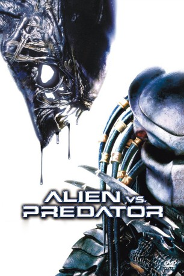

#2255 Alien vs. Predator 1
Alternativ: AVP: Alien vs. Predator
 
 IMDB-Wertung: 5.6 / 10
IMDB-Wertung: 5.6 / 10  Metascore: 29
Metascore: 29 
Eine Gruppe von Archäologen und Wissenschaftlern angeführt vom Millionär Charles Weyland begibt sich in die Antarktis. Sie vermuten im Eis ein antike Tempelanlage, die noch älter ist als die Pyramiden von Ägypten. In den Ruinen vorgedrungen, entdeckt das Team menschliche Skelette und versteinerte Überreste von Aliens. Es stellt sich schnell heraus, dass der Ort nicht nur als Brutstätte für Alien-Eier dient, sondern auch als Arena für junge Predators...
Jahr: 2004
Dauer: 101 Minuten
FSK: 16
Land: USA Studio: 20th Century FoxTonspuren: DTS - ,
Untertitel: Deutsch,
Auflösung: 1080p (1920x816) Größe: 9728 MB
Genre: Action, Thriller, Sci-Fi, Abenteuer
Regisseur: Paul W.S. Anderson
Drehbuch: Dan O'Bannon, Ronald Shusett, Jim Thomas, John Thomas, Paul W.S. Anderson
Soundtrack: Harald Kloser
Darsteller:
Datei: X:\7+mehr(A-Z)\Alien+Predator\Alien vs. Predator 1 (2004, FSK16, 1920x816).mkv seit 25.10.2015
Festplatte: HD Collection-7+mehr(A-Z)+Person
 Es gibt insgesamt 17 Filme in der Gruppe '7+mehr(A-Z)\Alien+Predator'
Es gibt insgesamt 17 Filme in der Gruppe '7+mehr(A-Z)\Alien+Predator'